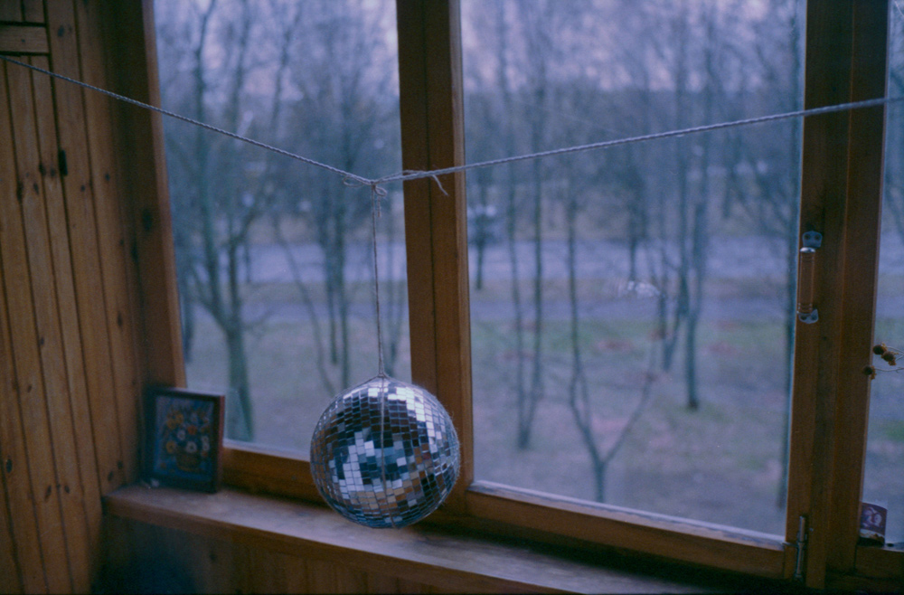
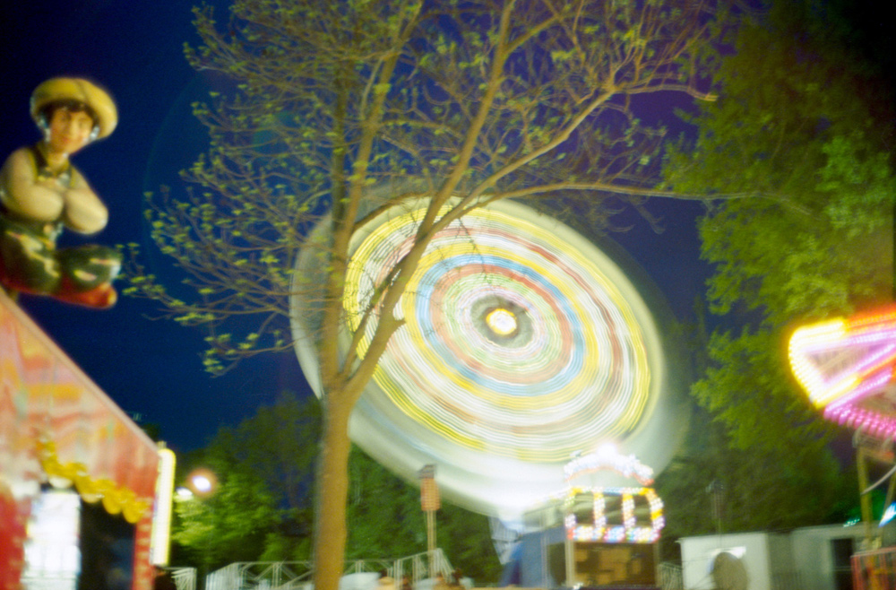
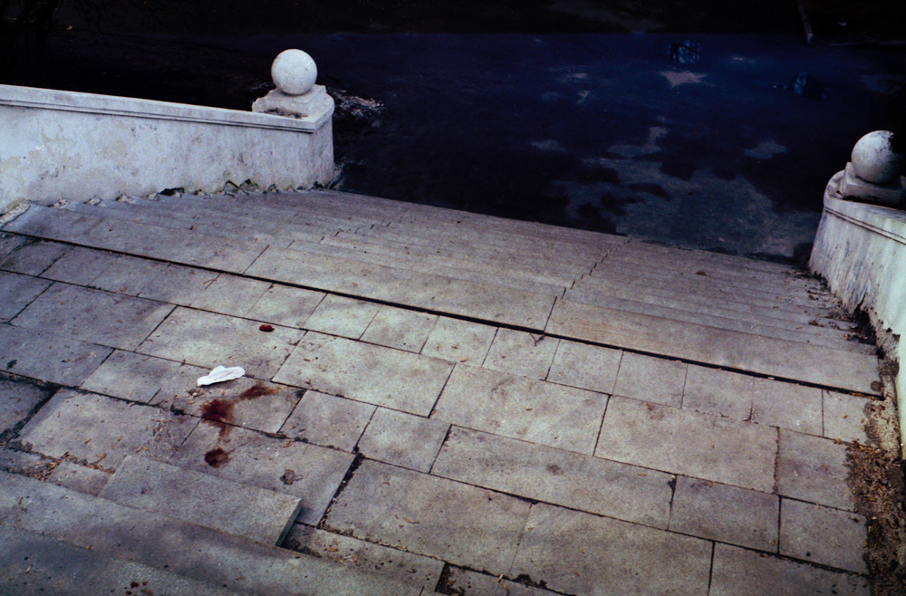
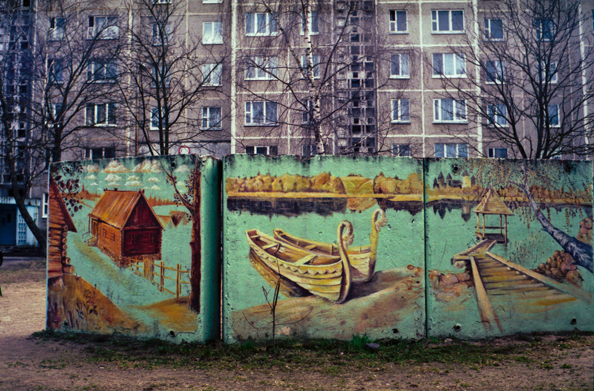
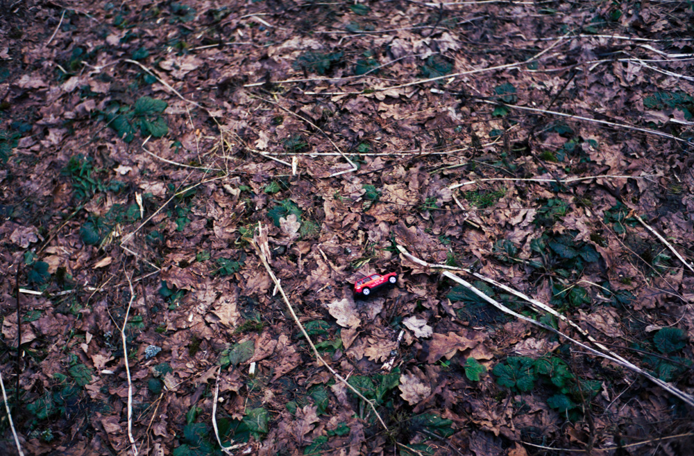
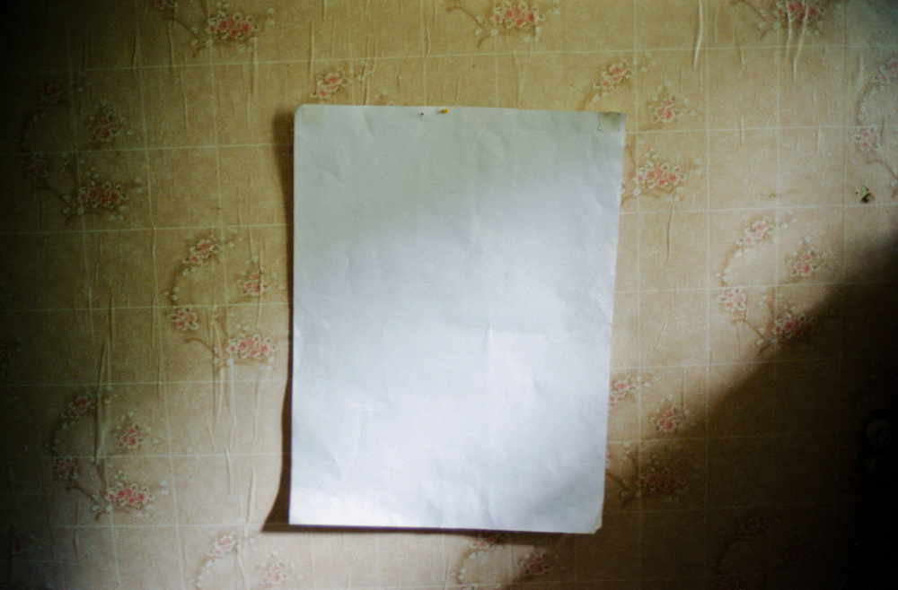
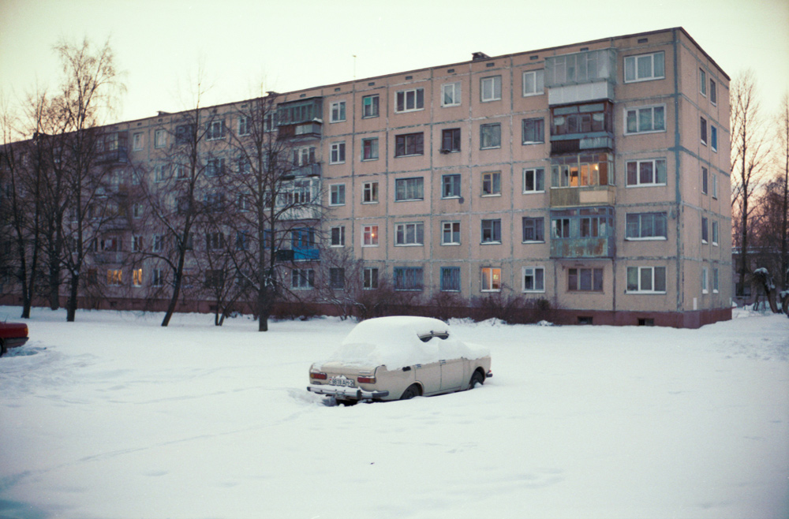

Мы поговорили с двумя матерями, воспитывающими детей с аутизмом. Наталья Сергеенко и Наталья Амплеева рассказали о жизни своих взрослых детей и о том, каково растить сына с неизвестным диагнозом в Беларуси и СССР.
Это второй наш материал о взрослом аутизме — непризнанном заболевании в системе здравоохранения Беларуси (Первый материал: «Одни дома. Взрослый аутизм»).
Кирилл, 39 лет
Рассказывает мама, Наталья Сергеенко, директор общественного объединения помощи людям с ограниченными умственными возможностями «Заботливые руки».
Кирилл родился в 1974 году. Он был очень красивым ребенком. Я начала обращаться к врачам через год, потому что он как-то не так сидел, ходить стал поздно, а как только пошёл — перестал говорить. Сначала ему вообще не могли поставить диагноз, предполагали всё, что угодно: фенилкетонурию, олигофрению, ДЦП. Я думаю, причиной болезни стало то, что у меня при родах был безводный период 27 часов (хотя в карточке написали 12 часов), и у Кирилла начали отмирать клетки мозга. Ещё могла повлиять прививка, которую мне сделали на работе, когда я была беременна.
Я ездила к врачам в Москву, в Санкт-Петербург в Институт мозга. В Минске было сложно договориться даже о занятии с логопедом. Тогда слова «аутизм» никто не знал. Первый раз мы его услышали в середине 90-х от шведских специалистов: они приезжали, когда мы создавали центр для тяжелобольных детей «Остров надежды». Но только в позапрошлом году я удостоверилась, что у Кирилла аутизм. Специалист из Швеции проводила семинар для родителей детей с аутизмом. Кирюша возле неё всё время крутился, и она сказала, что его поведение типично для человека с аутизмом. Он постоянно ходит, за ним нужно повторять его движения, чтобы он обратил на тебя внимание, послушал. В детстве он вдруг просыпался ночью и громко плакал с закрытыми глазами. Успокоить его было практически невозможно. Я ему глаза силой раскрывала, думала, может, сон страшный увидел. А это, оказывается, частое явление у маленьких детей с аутизмом.

Я сама занималась с Кирюшей, потому что специалистов не было. Пробовала найти дефектолога — пединститут их тогда только начал выпускать. Ходила с ним к логопеду в поликлинику: за десять минут она показывала мне, как нужно с ним заниматься, и приём заканчивался. Я выписывала толстенный журнал «Неврология и психиатрия», «Медицинскую газету», просматривала все книжные новинки. А потом вышла на работу, дочка родилась, и наши занятия прекратились. Я работала инженером-программистом, отпроситься было очень сложно. Мы с мужем по очереди оставались с Кириллом. Естественно, ни в какую школу он не пошёл. А чтобы учителя занимались с таким ребёнком на дому — в то время это было нереально. Сейчас намного проще — можно найти информацию в интернете, в какие-то центры обратиться.
Когда Кирилл был маленьким, было намного тяжелее: он лазил по шкафам, всё вытряхивал, разбрасывал. Сейчас ему 39, и, как каждому взрослому человеку, ему уже хочется больше отдыхать. Он походит, поглядит в окно, телевизор посмотрит. Маленьким он смотрел только спортивные передачи, а сейчас я смотрю фильм — и он со мной. Я пыталась ему книжки читать, но он слушал только пару минут. Раньше у нас была дача, Кирилл помогал там папе. Когда муж умер, мне нужно было брать Кирилла с собой на работу. Я тогда работала над проектом «Лечебно-трудовая мастерская» в Новинках. Он там ничем не интересовался и ничего не делал, но, по крайней мере, ходил по мастерской, смотрел, что делают другие. Мы проводили летние оздоровительные лагеря: арендовали пионерский лагерь и вывозили туда группу из 20-25 человек. Кроме нас, нескольких поваров и уборщиц в лагере никого не было. Кирилл привык, изменился в лучшую сторону: гулял со всеми, за руку брал, больше понимал что-то в плане общения.

У нас обычный распорядок дня. Утром я чищу ему зубы, умываю и брею его. Мы завтракаем. Потом я занимаюсь делами, он смотрит телевизор, слушает музыку или за мной ходит. Кирилл чувствителен к звуку, поэтому у меня всегда телевизор на самой низкой громкости. Если звук чуть громче, он начинает плакать, злиться, нервничать. Я только два года назад узнала, что у людей с аутизмом слух совершенно другой: они слышат сразу все звуки. Раньше, когда я ругала дочку и он начинал плакать, я думала, что он её защищает, а оказалось, он не выносит повышенного тона.
Сейчас нам сложнее, потому что живём в районе, где даже погулять негде. Мы больше гуляем летом, зимой практически не выходим: Кирилл может поскользнуться, а я его уже не удержу, у меня проблемы с костями. В тёплый сезон ездим в Лошицкий парк, на Минское море. С июня за ягодами, грибами через день точно выезжаем: часа полтора по лесу походим и домой.
Когда мы гуляем, кто-то не обращает на нас внимания, а кто-то пять раз оборачивается. Это естественно. Статьи, передачи не помогут понять то, с чем человек никогда не сталкивался. Это не его боль, не его проблема, зачем ему на этом заострять внимание?
С ним невозможно подняться по эскалатору на «Октябрьской»
В других странах (США, Германии) организованы огромные мастерские, куда каждый день привозят людей с особенностями развития. Но это не значит, что туда попали все люди, которым нужна помощь. И это не значит, что менталитет у немцев или американцев сильно изменился в отношении этих людей. Я не думаю, что если бы в Минске я пришла с Кириллом в кафе, кто-то бы сильно роптал на нас. Меня бы совершенно не смущали косые взгляды, я любого могу поставить на место. Но у меня нет денег на кафе: у нас пенсия на двоих три миллиона. Я не могу пойти или поехать с Кириллом в город, потому что с ним невозможно подняться по эскалатору на станции метро «Октябрьская» или сесть в автобус в толпе. Я не могу с ним поехать в Парк Челюскинцев или Парк Победы: мне там машину негде поставить. Это не моя личная проблема как матери человека с аутизмом, а проблема города.

Я сейчас со всем справляюсь сама. Конечно, есть ситуации, когда мне нужна помощь: каждый год я должна ложиться в больницу на 10 дней, а раз в несколько лет мне дают путёвку в санаторий, и хорошо бы туда ездить. Я ничего этого не делаю, потому что не с кем оставить Кирилла.
Но если бы были волонтёры, которые могли бы иногда погулять с Кириллом час-полтора, мне бы это помогало. Он любит, когда к нам кто-то приходит.
Если Вы хотите помочь семье Натальи Сергеенко или организации «Заботливые руки», вы можете позвонить по тел. +375 29 624 41 51 или написать на электронный адрес sergeenkon@mail.ru.
Денис, 34 года
Рассказывает мама, Наталья Амплеева, председатель ПО Октябрьского района МГО «Белорусская ассоциация помощи детям-инвалидам и молодым инвалидам».
О том, что у Дениса аутизм, я узнала только в позапрошлом году. Он восьмидесятого года рождения и из категории необучаемых детей — в те годы была такая категория. Я добилась того, что с 13 до 15 лет он обучался дома по программе вспомогательной школы. У Дениса нет абстрактного мышления, ему нужны тактильные, визуальные ощущения, чтобы что-то понять. Первый год с ним занималась молодая учительница. Она увешала все стены словами и буквами, ползала с ним по комнате. За год он начал читать и писать предложения типа «мама мыла раму», делать вычисления на счётах в пределах десяти. А потом пришла учительница, которая пыталась ему объяснить, что «к» — это согласная, а «а» — гласная. Она его уже ничему не научила.

Раньше Денис был очень общительный, до пяти лет гонял с ребятами в футбол во дворе. Мы постоянно на шашлыки ездили, в цирк ходили. У него все игры были о цирке. Мы ему купили настоящий цыганский кнут, и он с ним ходил вокруг манежа, который сам выстроил из деревянных кубиков, повторял: «Алле, алле». Но однажды мы поднимались по лестнице в цирке, очень громко объявили «Товарищи, занимайте свои места», Денис подпрыгнул на полметра и потерял равновесие — больше в цирк мы не ходили.
Он очень любит музыку: все кассеты фирмы «Союз» (видно, картинка ему нравится), Газманова, Высоцкого, Маликова, Киркорова. Ритмичные такие. Каждый Новый год мы ему дарили новый магнитофон (он постоянно деки ломал), кассеты, кубики и лошадей для цирка.

У Дениса был стрессовый период, дело доходило даже до драки. Я тогда младшей дочери всё время говорила: «Машка, прячься», чтобы у него не откладывалось в голове, что в момент стресса Маша где-то рядом. Он зацикливался на какой-то идее, пытался мне её высказать на своём «тарабарском языке», а я не понимала, и это переходило в агрессию. У него менялось лицо: нос заострялся, глаза впадали и становились с поволокой, как стакан из-под молока. Он машинально хватал меня за то, что попадётся под руку: волосы, руки, одежду. На него достаточно было водой брызнуть, чтобы переключить. Буквально через минуту-две он всё осознавал — ходил, плакал, говорил: «Мальчик плохой, мальчик так больше не будет». Врачи ему назначали препараты от агрессии, но эффект от них был такой же, как от обычной валерьянки. Я теперь, когда чувствую, что у него начинается приступ, даю валерьянки с водой — и через двадцать минут всё проходит.
Когда мы открыли в организации БелАПДИиМИ мастерские для работы людей с инвалидностью, Денис сильно изменился. Раньше он просыпался часов в девять, пил какао, одевался и полтора часа гулял во дворе. Теперь он каждое утро мне говорил (он плохо говорит): «Ну чего ты медлишь, давай быстрее, мне на работу надо», — прибегал в мастерскую, с гордостью ставил кассету в магнитофон и нажимал кнопку. Это была его работа. Нам было трудно научить его делать что-то ещё в мастерской, но со временем он освоился. А лет десять назад что-то произошло, и он перестал ходить в мастерскую.
Шесть лет назад ему нужно было полечить зубы. Врачи потребовали сдать анализы перед тем, как делать общий наркоз. Для Дениса эта ситуация оказалась стрессовой, и с тех пор он не выходит из дома. У него начал развиваться аутизм в тяжелой форме. Раньше он просто очень любил порядок и режим: идеально ровно ставил тапочки, раскладывал все по полочкам, каждый день жил по одному и тому же распорядку. Сейчас он уже полтора года не моется, не стрижет ногти, не бреется. Он стал похож на Карла Маркса. Он может 24 часа в сутки сидеть на своем диване с выключенным светом. Стоит какую-то инициативу проявить — он сразу ноги на диван, в позу эмбриона и в самый угол. Если я включу свет, он встанет выключит.

Я стараюсь вернуть Дениса к прежнему состоянию. В Беларуси нет психологов, которые могут работать со взрослыми людьми с аутизмом. Им сложно помочь, потому что у них уже всё «зацементировано». Но маленькими шагами я иду к цели. Теперь Денис каждое утро заходит в ванну: одна нога в ванной, другая — в коридоре. Я мочу губку и протираю его. Сейчас у нас на трех конечностях пострижены ногти.
Раньше его каждый месяц стригла парикмахер. Но однажды она его немножко ущипнула ножницами, и в следующий раз он уже к ней не подошёл. Сейчас у него очень длинные волосы. С сентября по март он их вообще не мыл. Я его приучаю снова мыть голову: наливаю в таз воды и бегаю с ним за Денисом по квартире. Он садится на свой диванчик, повторяет: «Мальчик не хочет, уйди, не хочу голову мыть». Я горстями лью на него воду, пытаюсь размазать шампунь. Он убегает, кричит: «Ты плохая», дерётся — я с тазиком за ним. Вот так терпеливо хожу за ним каждые выходные, наблюдаю за каждым движением, чтобы ухватиться за едва заметное изменение в поведении. Но стричься не даётся пока.
Раза три в неделю к Денису приходят волонтёры. В эти дни я с утра его умываю, переодеваю и пою кофе. Волонтёр приходит в 10 часов, кормит его и даёт таблетки против стресса. Денисом нужно постоянно руководить. Чтобы он поел, надо сидеть рядом, если встанешь, он сразу пойдёт за тобой.
Нет, вы не понимаете. Эти люди не больны
Папа у нас военный и считает, что такие люди, как Денис, должны чувствовать силу — тогда ими можно управлять. Они как-то были вместе на даче, папа решил остаться ночевать. А Денис не может этого понять: у него распорядок, по которому нужно вернуться домой. Он убежал с дачи, пытался найти дорогу самостоятельно. Отец испугался, нашёл его и применил силу. Когда я увидела последствия, то сказала, что лишу отца родительских прав. Когда близкий человек так поступает — это страшно. Я считаю, что только любовью и лаской можно чего-то добиться. Да, жесткость иногда нужна, но в разумных пределах. Всё время нужно контролировать тембр голоса, смотреть, как человек реагирует, раскладывать свои действия на маленькие шаги, чтобы достичь цели.

Аутизм — это образ жизни, наверное. Если в каждого из нас копнуть, мы все аутисты. Мы тоже живем по какому-то распорядку, но можем взять себя в руки. Я не трактую ребят в наших мастерских (даже с ЗПР, эпилепсией) как больных. Я однажды консультировалась у немецкого врача, рассказала о Денисе, как с ним общаюсь, работаю. Врач мне говорит: «Да, вы всё правильно делаете, только будьте внимательны, когда он захочет создать семью. Пусть соблюдает строгую диету». Я думаю: «Что он тут мелет-то, он, наверное, не понял чего-то. Какая семья, он же человек с инвалидностью, у него клеймо на всю жизнь!» Я ему опять: «Вы меня извините, вы, наверное, не поняли. Вот мне в больнице врач сказал, что мой сын инвалид, и предложил его сдать». Тогда врач говорит: «Нет, это вы не понимаете. Эти люди не больны. Вот представьте: вы съели клубнику, и я съел клубнику. У вас ничего нет, а у меня зуд. Я болен? Я не болен, у меня просто особенность. Так и у них». Я в жизни с несколькими такими замечательными людьми пообщалась и выстроила свою линию жизни. Кто-то смотрит на мою жизнь и у виска крутит. А мне интересно.
Если Вы хотите помочь семье Натальи Амплеевой или МГО «Белорусская ассоциация помощи детям-инвалидам и молодым инвалидам», вы можете позвонить по тел. +375 29 617 58 05 или написать на orhestra@yandex.ru.